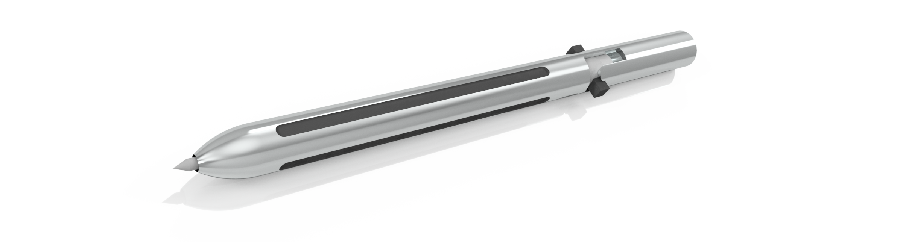

Founded in 2013, Galileo Robotics is a team of high school students from the Galileo Academy of Science and Technoloy in San Francisco that competes in the FIRST Robotics Competition. We seek to inspire and encourage future generations of engineers, scientists, and tech workers from all backgrounds. We have several subteams--from programming to mechanical to 3D modeling--that allows everyone to build their skillset and work effectively as team.

Back to Top